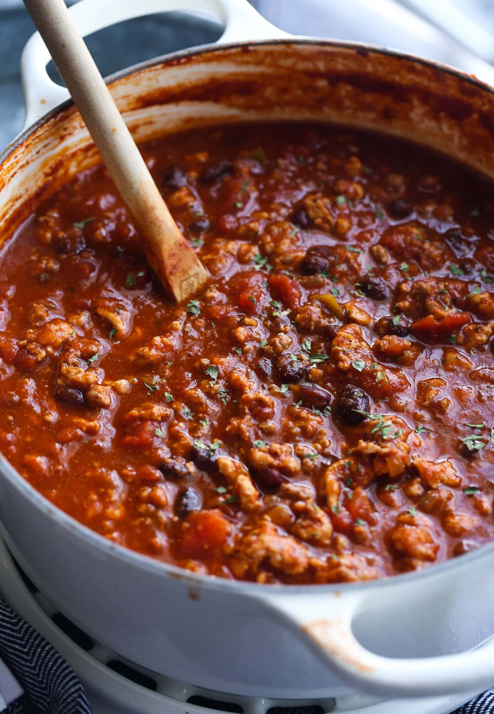

Chili

Chili for the whole family.
Substitute with any red meat for a personal spin.
Ingredients
- 2 lbs beef
- 1 can kernel corn
- 1 can sliced mushrooms
- 2 cans kidney beans
- 2 packets spicy chili seasoning
Steps
- Brown beef in pot or pan over stove
- Add corn, mushrooms, kidney beans and chili seasoning to
slow cooker
- Add beef to slow cooker, mixing thouroughly
- Cook on low heat for 5 hours, stirring often
- Let cool and enjoy!